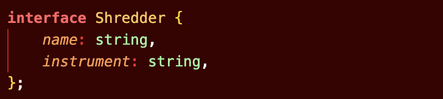

Maybe you need some more structure in your life. JavaScript reminds you of the kid you were in high school: wild and free, nobody could control you, or tell you what to do. But you're grown up now! You've learned that you need to be a little more careful, and that a little structure is good for you. You're ready, not for therapy, but for TypeScript.
TypeScript stands in an unusual relationship to JavaScript. TypeScript offers all of JavaScript's features, and an additional layer on top of these: TypeScript's type system. For example, JavaScript provides language primitives like string and number, but it doesn't check that you've consistently assigned these. Typescript does.
Since you're older now, you love great deals, so how about buy one get one free? Your existing working JavaScript code is also TypeScript code. How you like them apples? The main benefit of TypeScript is that it can highlight unexpected behavior in your code, lowering the chance of bugs. This tutorial provides a brief overview of TypeScript, focusing on its type system.
If you want something done, do it yourself. Right?
TypeScript knows the JavaScript language and will generate types for you in many cases. For example, in creating a variable and assigning it to a particular value, TypeScript will use the value as its type.
By understanding how JavaScript works, TypeScript can build a type-system that accepts JavaScript code but has types. This offers a type-system without needing to add extra characters to make types explicit in your code. That's how TypeScript knows that metalSaying is a string in the above example.
Sure, types can be inferred. But don't you like to boss people, err, programs around sometimes? Sometimes, you'd like a little bit of strict enforcement, because not everybody loves surprises. To cover these cases, TypeScript supports an extension of the JavaScript language, which offers places for you to tell TypeScript what the types should be.
For example, to create an object with an inferred type which includes name: string and instrument: string, you can write:
You can explicitly describe this object's shape using an interface declaration:
You can then declare a JavaScript object that conforms to the shape of the metal new interface by using syntax like : Typename after a variable declaration.
So what if they don't listen to you, huh? Well, it's my way or the highway buddy.
Ok, even though we're metal, we still follow trends. Since JavaScript supports classes and object-oriented programming, so does TypeScript. You can use an interface declaration with classes:
You can use interfaces to demand parameters and return values fit the types that YOU want! You don't always get what you want, do you? Well, this time, you don't have to compromise.
There's a couple primitive types available in JavaScript, like boolean, null, number, string, and undefined. TypeScript, the metal heads they are, add some wicked types, like any (whatever you want bro) and unknown (make sure they tell you bro). Can't forget never (not possible, bro) and void either.
With TypeScript, you can create complex types by combining simple ones. There are two popular ways to do so: with unions, and with generics.
With a union, you can declare that a type could be one of many types. This can be super useful when describing the set of string or number literals that a value is allowed to be. No surprises here.
This is a metal way to handle different types. For example, you may have a function that takes an array or a string.
Generics provide variables to types. A common example is an array. An array without generics could contain anything. An array with generics can describe the values that the array contains.
Or, since you're picky, you can declare your own interfaces that use generics. Now they'll do what you tell them!
One of TypeScript's core principles is that type checking focuses on the shape that values have. This is sometimes called “duck typing” or “structural typing”. In a structural type system, if two objects have the same shape, they are considered to be of the same type.
The guitar variable is never declared to be a Guitar type. However, TypeScript compares the shape of guitar to the shape of Guitar in the type-check. They have the same shape, so they let it slide, man.
The shape-matching only requires a subset of the object's fields to match. We don't care what your side hustle is, dude.